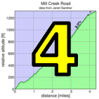

|  |  |
 |
| pl | # | name | team | cat | time | mph | fph | %median |
|---|---|---|---|---|---|---|---|---|
| 1 | 401 | Shaena Berlin | MIT-West | 2 | 7:44.38 | 9.30 | 3230 | 126.49 |
| 2 | 122 | Jennie Phillips | Sr's & Mr's of No Mercy | 50+ | 8:16.00 | 8.71 | 3024 | 118.43 |
| 3 | 243 | Mirre Stallen | Stanford Cycling | ? | 8:36.30 | 8.37 | 2905 | 113.77 |
| 4 | 43 | Sindy Cho | Low-Key | Just Make It To The Top | 8:50.73 | 8.14 | 2827 | 110.68 |
| 5 | 8 | Janet Gardner | Sr's & Mr's of No Mercy | 45+ | 9:04.86 | 7.93 | 2753 | 107.81 |
| 6 | 49 | Christina Davis | LGBRC | 4 | 9:16.15 | 7.77 | 2697 | 105.62 |
| 7 | 508 | Christine Ryan | SuperPro | 10:36.50 | 6.79 | 2357 | 92.29 |
| pl | # | name | team | cat | time | mph | fph | %median |
|---|---|---|---|---|---|---|---|---|
| 1 | 504 | Parker Gara | SunPower Racing | Junior | 4:54.06 | 14.69 | 5101 | 165.60 |
| 2 | 70 | Lyndsey Furtado | Team CVC | 3 | 6:15.97 | 11.49 | 3990 | 129.52 |
| 3 | 90 | Bill Laddish | Team CVC | 45's | 6:16.69 | 11.47 | 3982 | 129.27 |
| 4 | 46 | David Collet | Stanford & Sons | 45+ | 6:18.99 | 11.40 | 3958 | 128.49 |
| 5 | 30 | Jacob Berkman | ThirstyBear p/b Akamai | 35+ | 6:19.39 | 11.39 | 3954 | 128.35 |
| 6 | 510 | Murray Swanson | Pen Velo/Pomodoro | 6:21.38 | 11.33 | 3933 | 127.68 | |
| 7 | 228 | Carl Nielson | Sr's & Mr's of No Mercy | 55+ | 6:40.38 | 10.79 | 3747 | 121.62 |
| 8 | 39 | Paul Castonguay | Low-Key | 45+ | 6:54.63 | 10.42 | 3618 | 117.44 |
| 9 | 227 | Rob Nast | Plus 3 | 50+ | 6:58.29 | 10.33 | 3586 | 116.42 |
| 10 | 220 | Justin Kennedy | Cordelia Climb Team | 30+ | 6:58.43 | 10.32 | 3585 | 116.38 |
| 11 | 78 | Rich Hill | LGBRC | 50+ | 7:13.31 | 9.97 | 3462 | 112.38 |
| 12 | 509 | Brian Schrader | Fat Cake Club | None | 7:34.56 | 9.50 | 3300 | 107.13 |
| 13 | 132 | Caleb Richardson | Team CVC | 30+ | 7:36.95 | 9.45 | 3283 | 106.57 |
| 14 | 119 | Jim Perreira | LGBRC | 45+ | 7:37.45 | 9.44 | 3279 | 106.45 |
| 15 | 91 | Stephen Lamm | 40+ | 7:40.27 | 9.39 | 3259 | 105.80 | |
| 16 | 212 | Robert Easley | Sr's & Mr's of No Mercy | 45+ | 7:41.06 | 9.37 | 3254 | 105.62 |
| 17 | 12 | Will Von Kaenel | LGBRC | 55+ | 7:43.89 | 9.31 | 3234 | 104.97 |
| 18 | 152 | Stuart Taylor | Tandem Team Taylor | 40+ | 7:54.89 | 9.10 | 3159 | 102.54 |
| 19 | 1 | Daniel Connelly | Low-Key | 3 | 7:59.77 | 9.00 | 3127 | 101.50 |
| 20 | 143 | Jeremy Scott | LGBRC | 45+ | 8:01.95 | 8.96 | 3113 | 101.04 |
| 21 | 501 | Peter Colijn | SF2G | 8:03.39 | 8.94 | 3103 | 100.74 | |
| 22 | 101 | Paul McKenzie | Sr's & Mr's of No Mercy | 60+ | 8:05.87 | 8.89 | 3087 | 100.23 |
| 23 | 306 | Joseph Junio | SOLO | Havefun | 8:08.06 | 8.85 | 3074 | 99.78 |
| 24 | 44 | Paul Chuck | Sr's & Mr's of No Mercy | 60+ | 8:13.12 | 8.76 | 3042 | 98.75 |
| 25 | 150 | Andy Sutterfield | San Jose State University | 25+ | 8:15.45 | 8.72 | 3028 | 98.29 |
| 26 | 65 | Andrew Fitzhugh | Stanford Cycling | 50+ | 8:18.67 | 8.66 | 3008 | 97.65 |
| 27 | 116 | Frank Paysen | Chain Reaction | 55+ | 8:20.26 | 8.64 | 2999 | 97.34 |
| 28 | 35 | Scott Byer | 45+ | 8:31.36 | 8.45 | 2934 | 95.23 | |
| 29 | 160 | Jim Williams | San Jose Bike Club | 65+ | 8:31.43 | 8.45 | 2933 | 95.22 |
| 30 | 69 | Brad Fox | LGBRC | 30+ | 8:37.84 | 8.34 | 2897 | 94.04 |
| 31 | 503 | David Engelbrecht | Summit Chuters | 45+ | 8:40.30 | 8.30 | 2883 | 93.59 |
| 32 | 502 | Nathaniel Dixon | MIT | 8:43.75 | 8.25 | 2864 | 92.98 | |
| 33 | 131 | Doug Reynolds | NightRiders | 60+ | 8:44.23 | 8.24 | 2862 | 92.89 |
| 34 | 118 | Ramon Periquet | Team CVC | 50+ | 8:46.55 | 8.20 | 2849 | 92.48 |
| 35 | 500 | Patrick Callahan | Quadzilla Racing | Single Speed | 8:49.22 | 8.16 | 2835 | 92.02 |
| 36 | 85 | Rupesh Kapoor | Slightly Old | 8:52.83 | 8.11 | 2815 | 91.39 | |
| 37 | 507 | Lucas Pereira | 40+ | 8:59.91 | 8.00 | 2778 | 90.19 | |
| 38 | 302 | Fred Egley | Clagnuts | 50+ | 9:07.36 | 7.89 | 2741 | 88.97 |
| 39 | 67 | Joseph Fong | Team CVC | 4 | 9:10.50 | 7.85 | 2725 | 88.46 |
| 40 | 219 | Brian Kennedy | Cordelia Climb Team | 4 | 9:23.24 | 7.67 | 2663 | 86.46 |
| 41 | 247 | Brian Ward | Low-Key | 40+ | 9:26.98 | 7.62 | 2646 | 85.89 |
| 42 | 506 | Thomas Maltbaek | Mountain View | U27 | 9:32.86 | 7.54 | 2619 | 85.01 |
| 43 | 114 | Dan Pankratz | LGBRC | 40+ | 10:03.96 | 7.15 | 2484 | 80.63 |
| 44 | 159 | Carl Werner | LGBRC | 50+ | 10:05.41 | 7.14 | 2478 | 80.43 |
| 45 | 505 | Ryan PC Gibson | 40+ | 10:13.17 | 7.05 | 2446 | 79.42 | |
| 46 | 125 | Thomas Preisler | LGBRC | 60+ | 10:54.89 | 6.60 | 2291 | 74.36 |
| 47 | 92 | Garrett Lau | LGBRC | 50+ | 11:02.55 | 6.52 | 2264 | 73.50 |
| 48 | 52 | Gilles Denoyer | Finisar | 45+ | 11:30.95 | 6.25 | 2171 | 70.48 |
| 49 | 155 | S.V. Vasudevan | 13:26.36 | 5.36 | 1860 | 60.39 |
| pl | # | name | team | cat | time | mph | fph | %median |
|---|---|---|---|---|---|---|---|---|
| 1 | 55 | Emma Dixon | 35+ | 9:35.52 | 7.51 | 2607 | 93.34 | |
| 56 | Jonathan Dixon | 35+ |
| pl | # | name | team | cat | time | mph | fph | %median |
|---|---|---|---|---|---|---|---|---|
| 1 | 6 | Bill Bushnell | Low-Key | Recumbent | 17:30.23 | 4.11 | 1428 | 46.37 |
| pl | # | name | team | cat | time | mph | fph | %median |
|---|---|---|---|---|---|---|---|---|
| 1 | 243 | Mirre Stallen | Stanford Cycling | ? | 9:40.91 | 6.20 | 3111 | 125.94 |
| 2 | 8 | Janet Gardner | Sr's & Mr's of No Mercy | 45+ | 9:56.28 | 6.04 | 3031 | 122.70 |
| 3 | 401 | Shaena Berlin | MIT-West | 2 | 9:58.48 | 6.02 | 3020 | 122.25 |
| 4 | 43 | Sindy Cho | Low-Key | Just Make It To The Top | 10:12.12 | 5.88 | 2952 | 119.52 |
| 5 | 122 | Jennie Phillips | Sr's & Mr's of No Mercy | 50+ | 10:59.66 | 5.46 | 2740 | 110.91 |
| 6 | 49 | Christina Davis | LGBRC | 4 | 11:09.33 | 5.38 | 2700 | 109.31 |
| 7 | 508 | Christine Ryan | SuperPro | 12:11.08 | 4.92 | 2472 | 100.07 |
| pl | # | name | team | cat | time | mph | fph | %median |
|---|---|---|---|---|---|---|---|---|
| 1 | 46 | David Collet | Stanford & Sons | 45+ | 7:32.82 | 7.95 | 3991 | 133.94 |
| 2 | 510 | Murray Swanson | Pen Velo/Pomodoro | 7:36.45 | 7.89 | 3959 | 132.87 | |
| 3 | 228 | Carl Nielson | Sr's & Mr's of No Mercy | 55+ | 7:43.51 | 7.77 | 3899 | 130.85 |
| 4 | 90 | Bill Laddish | Team CVC | 45's | 7:49.59 | 7.67 | 3848 | 129.16 |
| 5 | 227 | Rob Nast | Plus 3 | 50+ | 8:03.06 | 7.45 | 3741 | 125.56 |
| 6 | 1 | Daniel Connelly | Low-Key | 3 | 8:07.80 | 7.38 | 3705 | 124.34 |
| 7 | 30 | Jacob Berkman | ThirstyBear p/b Akamai | 35+ | 8:10.63 | 7.34 | 3683 | 123.62 |
| 8 | 91 | Stephen Lamm | 40+ | 8:24.18 | 7.14 | 3584 | 120.30 | |
| 9 | 501 | Peter Colijn | SF2G | 8:31.68 | 7.04 | 3532 | 118.53 | |
| 10 | 212 | Robert Easley | Sr's & Mr's of No Mercy | 45+ | 8:35.58 | 6.98 | 3505 | 117.64 |
| 11 | 78 | Rich Hill | LGBRC | 50+ | 8:36.37 | 6.97 | 3500 | 117.46 |
| 12 | 39 | Paul Castonguay | Low-Key | 45+ | 8:45.38 | 6.85 | 3440 | 115.44 |
| 13 | 70 | Lyndsey Furtado | Team CVC | 3 | 8:45.64 | 6.85 | 3438 | 115.38 |
| 14 | 119 | Jim Perreira | LGBRC | 45+ | 8:51.77 | 6.77 | 3398 | 114.05 |
| 15 | 101 | Paul McKenzie | Sr's & Mr's of No Mercy | 60+ | 9:28.98 | 6.33 | 3176 | 106.60 |
| 16 | 306 | Joseph Junio | SOLO | Havefun | 9:28.99 | 6.33 | 3176 | 106.60 |
| 17 | 152 | Stuart Taylor | Tandem Team Taylor | 40+ | 9:31.37 | 6.30 | 3163 | 106.15 |
| 18 | 503 | David Engelbrecht | Summit Chuters | 45+ | 9:42.52 | 6.18 | 3102 | 104.12 |
| 19 | 44 | Paul Chuck | Sr's & Mr's of No Mercy | 60+ | 9:53.69 | 6.06 | 3044 | 102.16 |
| 20 | 132 | Caleb Richardson | Team CVC | 30+ | 10:01.22 | 5.99 | 3006 | 100.88 |
| 21 | 35 | Scott Byer | 45+ | 10:03.62 | 5.96 | 2994 | 100.48 | |
| 22 | 160 | Jim Williams | San Jose Bike Club | 65+ | 10:06.97 | 5.93 | 2977 | 99.93 |
| 23 | 65 | Andrew Fitzhugh | Stanford Cycling | 50+ | 10:09.84 | 5.90 | 2963 | 99.46 |
| 24 | 220 | Justin Kennedy | Cordelia Climb Team | 30+ | 10:13.21 | 5.87 | 2947 | 98.91 |
| 25 | 150 | Andy Sutterfield | San Jose State University | 25+ | 10:22.41 | 5.78 | 2904 | 97.45 |
| 26 | 143 | Jeremy Scott | LGBRC | 45+ | 10:31.88 | 5.70 | 2860 | 95.98 |
| 27 | 12 | Will Von Kaenel | LGBRC | 55+ | 10:39.27 | 5.63 | 2827 | 94.88 |
| 28 | 116 | Frank Paysen | Chain Reaction | 55+ | 10:42.54 | 5.60 | 2813 | 94.39 |
| 29 | 131 | Doug Reynolds | NightRiders | 60+ | 10:47.72 | 5.56 | 2790 | 93.64 |
| 30 | 500 | Patrick Callahan | Quadzilla Racing | Single Speed | 10:53.84 | 5.51 | 2764 | 92.76 |
| 31 | 502 | Nathaniel Dixon | MIT | 10:54.21 | 5.50 | 2762 | 92.71 | |
| 32 | 509 | Brian Schrader | Fat Cake Club | None | 10:56.79 | 5.48 | 2752 | 92.34 |
| 33 | 85 | Rupesh Kapoor | Slightly Old | 11:13.01 | 5.35 | 2685 | 90.12 | |
| 34 | 302 | Fred Egley | Clagnuts | 50+ | 11:17.01 | 5.32 | 2669 | 89.59 |
| 35 | 118 | Ramon Periquet | Team CVC | 50+ | 11:17.65 | 5.31 | 2667 | 89.50 |
| 36 | 69 | Brad Fox | LGBRC | 30+ | 11:26.50 | 5.24 | 2632 | 88.35 |
| 37 | 506 | Thomas Maltbaek | Mountain View | U27 | 11:29.82 | 5.22 | 2620 | 87.92 |
| 38 | 247 | Brian Ward | Low-Key | 40+ | 11:42.21 | 5.13 | 2574 | 86.37 |
| 39 | 507 | Lucas Pereira | 40+ | 11:45.19 | 5.11 | 2563 | 86.01 | |
| 40 | 67 | Joseph Fong | Team CVC | 4 | 11:48.87 | 5.08 | 2549 | 85.56 |
| 41 | 504 | Parker Gara | SunPower Racing | Junior | 12:10.07 | 4.93 | 2475 | 83.08 |
| 42 | 114 | Dan Pankratz | LGBRC | 40+ | 13:12.61 | 4.54 | 2280 | 76.52 |
| 43 | 159 | Carl Werner | LGBRC | 50+ | 13:14.40 | 4.53 | 2275 | 76.35 |
| 44 | 505 | Ryan PC Gibson | 40+ | 13:29.54 | 4.45 | 2232 | 74.92 | |
| 45 | 125 | Thomas Preisler | LGBRC | 60+ | 13:31.50 | 4.44 | 2227 | 74.74 |
| 46 | 219 | Brian Kennedy | Cordelia Climb Team | 4 | 13:32.90 | 4.43 | 2223 | 74.61 |
| 47 | 92 | Garrett Lau | LGBRC | 50+ | 13:44.80 | 4.36 | 2191 | 73.53 |
| 48 | 52 | Gilles Denoyer | Finisar | 45+ | 14:15.34 | 4.21 | 2113 | 70.91 |
| 49 | 155 | S.V. Vasudevan | 19:21.54 | 3.10 | 1556 | 52.22 |
| pl | # | name | team | cat | time | mph | fph | %median |
|---|---|---|---|---|---|---|---|---|
| 1 | 55 | Emma Dixon | 35+ | 11:39.42 | 5.15 | 2584 | 95.66 | |
| 56 | Jonathan Dixon | 35+ |
| pl | # | name | team | cat | time | mph | fph | %median |
|---|---|---|---|---|---|---|---|---|
| 1 | 6 | Bill Bushnell | Low-Key | Recumbent | 15:55.22 | 3.77 | 1892 | 63.50 |
| pl | # | name | team | cat | time | mph | fph | %median |
|---|---|---|---|---|---|---|---|---|
| 1 | 401 | Shaena Berlin | MIT-West | 2 | 6:27.25 | 6.51 | 3386 | 132.90 |
| 2 | 8 | Janet Gardner | Sr's & Mr's of No Mercy | 45+ | 6:38.74 | 6.32 | 3288 | 129.07 |
| 3 | 122 | Jennie Phillips | Sr's & Mr's of No Mercy | 50+ | 6:42.26 | 6.26 | 3259 | 127.94 |
| 4 | 243 | Mirre Stallen | Stanford Cycling | ? | 6:49.17 | 6.16 | 3204 | 125.78 |
| 5 | 43 | Sindy Cho | Low-Key | Just Make It To The Top | 7:14.82 | 5.80 | 3015 | 118.36 |
| 6 | 49 | Christina Davis | LGBRC | 4 | 7:52.00 | 5.34 | 2778 | 109.04 |
| 7 | 508 | Christine Ryan | SuperPro | 9:10.89 | 4.57 | 2380 | 93.42 |
| pl | # | name | team | cat | time | mph | fph | %median |
|---|---|---|---|---|---|---|---|---|
| 1 | 503 | David Engelbrecht | Summit Chuters | 45+ | 4:47.37 | 8.77 | 4562 | 148.47 |
| 2 | 510 | Murray Swanson | Pen Velo/Pomodoro | 5:22.82 | 7.81 | 4061 | 132.16 | |
| 3 | 228 | Carl Nielson | Sr's & Mr's of No Mercy | 55+ | 5:25.00 | 7.75 | 4034 | 131.28 |
| 4 | 46 | David Collet | Stanford & Sons | 45+ | 5:30.75 | 7.62 | 3964 | 128.99 |
| 5 | 90 | Bill Laddish | Team CVC | 45's | 5:39.05 | 7.43 | 3867 | 125.84 |
| 6 | 119 | Jim Perreira | LGBRC | 45+ | 5:44.09 | 7.32 | 3810 | 124.00 |
| 7 | 227 | Rob Nast | Plus 3 | 50+ | 5:47.92 | 7.24 | 3768 | 122.63 |
| 8 | 1 | Daniel Connelly | Low-Key | 3 | 5:48.48 | 7.23 | 3762 | 122.43 |
| 9 | 91 | Stephen Lamm | 40+ | 5:53.06 | 7.14 | 3713 | 120.84 | |
| 10 | 212 | Robert Easley | Sr's & Mr's of No Mercy | 45+ | 5:55.63 | 7.09 | 3687 | 119.97 |
| 11 | 30 | Jacob Berkman | ThirstyBear p/b Akamai | 35+ | 6:02.51 | 6.95 | 3617 | 117.69 |
| 12 | 78 | Rich Hill | LGBRC | 50+ | 6:02.64 | 6.95 | 3615 | 117.65 |
| 13 | 39 | Paul Castonguay | Low-Key | 45+ | 6:02.77 | 6.95 | 3614 | 117.61 |
| 14 | 70 | Lyndsey Furtado | Team CVC | 3 | 6:07.42 | 6.86 | 3568 | 116.12 |
| 15 | 504 | Parker Gara | SunPower Racing | Junior | 6:10.51 | 6.80 | 3539 | 115.15 |
| 16 | 501 | Peter Colijn | SF2G | 6:16.91 | 6.69 | 3479 | 113.20 | |
| 17 | 306 | Joseph Junio | SOLO | Havefun | 6:36.62 | 6.35 | 3306 | 107.57 |
| 18 | 101 | Paul McKenzie | Sr's & Mr's of No Mercy | 60+ | 6:37.81 | 6.33 | 3296 | 107.25 |
| 19 | 152 | Stuart Taylor | Tandem Team Taylor | 40+ | 6:41.43 | 6.28 | 3266 | 106.29 |
| 20 | 44 | Paul Chuck | Sr's & Mr's of No Mercy | 60+ | 6:55.44 | 6.07 | 3156 | 102.70 |
| 21 | 132 | Caleb Richardson | Team CVC | 30+ | 7:03.87 | 5.95 | 3093 | 100.66 |
| 22 | 143 | Jeremy Scott | LGBRC | 45+ | 7:06.66 | 5.91 | 3073 | 100.00 |
| 23 | 160 | Jim Williams | San Jose Bike Club | 65+ | 7:10.18 | 5.86 | 3048 | 99.18 |
| 24 | 150 | Andy Sutterfield | San Jose State University | 25+ | 7:17.29 | 5.76 | 2998 | 97.57 |
| 25 | 500 | Patrick Callahan | Quadzilla Racing | Single Speed | 7:28.33 | 5.62 | 2924 | 95.16 |
| 26 | 65 | Andrew Fitzhugh | Stanford Cycling | 50+ | 7:28.69 | 5.62 | 2922 | 95.09 |
| 27 | 502 | Nathaniel Dixon | MIT | 7:29.50 | 5.61 | 2917 | 94.92 | |
| 28 | 302 | Fred Egley | Clagnuts | 50+ | 7:30.45 | 5.59 | 2911 | 94.72 |
| 29 | 131 | Doug Reynolds | NightRiders | 60+ | 7:31.12 | 5.59 | 2906 | 94.58 |
| 30 | 116 | Frank Paysen | Chain Reaction | 55+ | 7:32.99 | 5.56 | 2894 | 94.19 |
| 31 | 118 | Ramon Periquet | Team CVC | 50+ | 7:39.12 | 5.49 | 2856 | 92.93 |
| 32 | 507 | Lucas Pereira | 40+ | 7:42.37 | 5.45 | 2836 | 92.27 | |
| 33 | 12 | Will Von Kaenel | LGBRC | 55+ | 7:42.39 | 5.45 | 2835 | 92.27 |
| 34 | 509 | Brian Schrader | Fat Cake Club | None | 7:44.59 | 5.42 | 2822 | 91.84 |
| 35 | 35 | Scott Byer | 45+ | 7:51.67 | 5.34 | 2780 | 90.46 | |
| 36 | 69 | Brad Fox | LGBRC | 30+ | 8:01.47 | 5.23 | 2723 | 88.62 |
| 37 | 85 | Rupesh Kapoor | Slightly Old | 8:02.42 | 5.22 | 2718 | 88.44 | |
| 38 | 506 | Thomas Maltbaek | Mountain View | U27 | 8:09.68 | 5.15 | 2677 | 87.13 |
| 39 | 247 | Brian Ward | Low-Key | 40+ | 8:22.11 | 5.02 | 2611 | 84.97 |
| 40 | 67 | Joseph Fong | Team CVC | 4 | 8:25.98 | 4.98 | 2591 | 84.32 |
| 41 | 159 | Carl Werner | LGBRC | 50+ | 9:12.70 | 4.56 | 2372 | 77.20 |
| 42 | 219 | Brian Kennedy | Cordelia Climb Team | 4 | 9:14.13 | 4.55 | 2366 | 76.99 |
| 43 | 114 | Dan Pankratz | LGBRC | 40+ | 9:21.07 | 4.49 | 2337 | 76.04 |
| 44 | 92 | Garrett Lau | LGBRC | 50+ | 9:40.79 | 4.34 | 2257 | 73.46 |
| 45 | 125 | Thomas Preisler | LGBRC | 60+ | 9:50.75 | 4.27 | 2219 | 72.22 |
| 46 | 52 | Gilles Denoyer | Finisar | 45+ | 9:51.88 | 4.26 | 2215 | 72.08 |
| 47 | 505 | Ryan PC Gibson | 40+ | 10:10.78 | 4.13 | 2147 | 69.85 | |
| 48 | 155 | S.V. Vasudevan | 15:32.46 | 2.70 | 1406 | 45.76 |
| pl | # | name | team | cat | time | mph | fph | %median |
|---|---|---|---|---|---|---|---|---|
| 1 | 55 | Emma Dixon | 35+ | 8:29.27 | 4.95 | 2574 | 92.42 | |
| 56 | Jonathan Dixon | 35+ |
| pl | # | name | team | cat | time | mph | fph | %median |
|---|---|---|---|---|---|---|---|---|
| 1 | 6 | Bill Bushnell | Low-Key | Recumbent | 11:33.37 | 3.63 | 1891 | 61.53 |